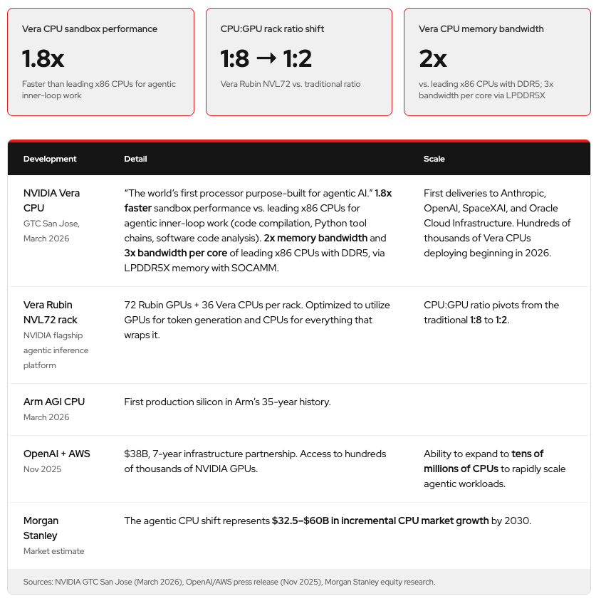

过去三年，GPU主导了LLM的话题。这篇Red Hat博客审视：那些让GPU成为LLM推理显而易见选择的假设，正在被重新谈判：以及两个关键驱动如何把推理推向CPU。
核心论点：GPU不会消失，但agentic AI引入的工作负载类（编排、工具执行、上下文堆叠）和小型化本地模型的经济性，正在把一部分推理拉回CPU。
过去三年，GPU主导了LLM对话。本文审视：那些让GPU成为LLM推理显而易见选择的假设正在被重新谈判：以及为什么、它对推理栈意味着什么。
这里要考察：为什么让GPU成为LLM推理显而易见选择的假设正在被重新协商？是什么在改变推理栈？以及其后果。
但这里没有抛弃GPU的意思。弄清激励这场转变的驱动、它们在现实世界已多快发生、以及如何在你的环境中衡量和部署它们。
归根结底（无pun意），CPU和GPU解决根本不同的问题。
现代GPU含数万核心，设计成在同一操作上对数千数据元素执行（SIMD）：一次取回大量数、同时做相同运算。现代CPU则通常有1到数百核，为顺序、条件、分支控制流优化：跳转、分支、逻辑、连接和变量。
这两种架构虽本质不同，却不是竞争者；它们最适合搭档工作。真正的问题不是「哪个更好」，而是「正确的分工是什么」：哪种架构最擅长处理哪种特定的AI、或AI邻近的工作负载。
这种分工归结为如何衡量它们的工作：FLOPS vs指令延迟。
GPU以每秒浮点运算次数（FLOPS）论成败。因为AI模型是海量小数（decimal）的网络，FLOPS是所有语言模型的心跳。CPU则专长指令延迟：单核能多快执行一条指令。对活跃在变量、对象、条件状态中的顺序工作负载，低延迟在执行细粒度、不可预测的操作上不可战胜。
若逼GPU跑一个混乱的Python运行时，其庞大FLOP容量闲置、被任务切换和序列化反复窒息。让CPU做算术密集型模型推理，它几十Gbps的内存带宽也拖累它：它更适合快速、单点决策而不是海量并行数学。
想到传统推理栈，会想到聊天机器人的serving应用。这里CPU往往只是乘客（a passenger）。
典型流程：请求到达API server，CPU做tokenize和调度。CPU处理所有初始任务，然后工作被送到GPU，GPU成为推理主力：前向传播一个接一个。
这种模型里，CPU当接待员（receptionist），做协调和组织工作，GPU做重活。对大多数第一代、相对简单的单prompt-单响应聊天用例，这完全没问题。
随着agentic AI兴起，出现一种新的推理画像，放大了对CPU特定计算的需求。
「Agentic AI」让人想到集成的agent harness（开源框架与agent运行时）……但在核心，agentic从根本上改变了模型消费和产出token的方式。
agentic系统里，模型不单发一个prompt然后等响应。它生成一个行动计划，然后用一组工具（tool calls）执行：读文件、查询数据库、写代码、调API：每次工具调用后更新上下文并决定下一步。结果：大量短prompt + 短响应交织，都在共享上下文之上，中间穿插复杂顺序逻辑和分支决策。
这正是CPU的地盘。在Georgia Tech和Intel研究者的合作中，他们发现agentic工作负载里CPU的参与（CPU工作占比）显著增大。
Intel Q1 2026财报电话会的数字量化了这在多大程度上已经发生：
Intel Q1 2026数据中心和AI段收入 $5.1B，同比 +22%，需求跑在供应前面。
Arm自己的分析更直白地预测这个转变。传统AI数据中心需要约3000万CPU；当推理走向agentic、走向边缘，这个数字会急剧放大。
与agentic AI催化的转变分开，第二个结构性变化正把推理推向CPU：更小、更本地化的模型。
这波变化归因于施加在provider上的4个主要压力：
小型语言模型（SLM）成熟到可行的程度：Hugging Face SmolLM2（135M到1.7B）、Qwen2.5-VL等小模型现在能处理日常任务。
领域专用数据：在精心策划的数据上训练的模型，可用比通用训练少100× 的算力获得领域特定性能。
（其余压力包括：边缘部署的延迟/隐私/成本/离线可用性考量。）
这些不是理论工作负载。CPU时代正快速逼近，如果还没到的话。

OpenAI和AWS在2025年11月签了 $38B、7年的基础设施伙伴关系。
3月，Arm发布AGI CPU：其35年历史里首个量产硅。
第一批交付给了Anthropic、OpenAI、SpaceXAI和Oracle Cloud Infrastructure，它们宣布了部署计划。
NVIDIA旗舰级agentic推理平台Vera Rubin NVL72把72块Rubin GPU和36块Vera CPU配对（比GPU-only的配置在agentic推理上带来约1.8× 性能）。
Morgan Stanley估计agentic CPU转变到2030年代表 $32.5–$60B的增量CPU市场增长。
对GPU主导的推理工作负载，GPU优势巨大且有据可查。单块H200在高并发下服务大量token……但衡量CPU推理时，高并发下的峰值吞吐不是最相关的基准。
CPU推理更重要的是：GPU被占用时可以运行的离线/后台工作负载；长尾/空闲时间的补充容量；以及永远不需要达到峰值、但必须可靠、私密、经济上可持续的服务。
GPU基准已建立规范，但CPU推理基准目前是供应商特定或更差的混乱状态。
如果你的LLM部署思维模型还建立在GPU集群上，这听起来挺吓人。vLLM今年有专门的CPU部署工作流：我们最近的vLLM办公时间讨论了端到端部署。
软件栈的几项进展让CPU推理达到2年前达不到的可用水平。
vLLM的CPU后端支持continuous batching、PagedAttention、prefix caching、chunked prefill和tensor parallel：正是GPU前向主干启用的功能。
OpenAI兼容API跨后端一致：意味着先在CPU基础设施上启动的部署，无需改动应用层就能扩展到GPU。
在Arm上，oneDNN和Arm Compute Library构建路径，结合llmcompressor的INT4量化，是可生产（production-grade）的方案。
在Intel上，Intel Extension for PyTorch（IPEX）在Xeon上自动启用AMX支持的BF16运算。
GPU不会消失。对大规模模型的高并发生产serving，GPU是正确答案且仍将是。
变化的是那句话的边界（perimeter）。Agentic AI引入了一类工作负载：编排、工具执行、上下文堆叠：它们需要大量的顺序、不可预测的、指令延迟受限的算力，无论多少GPU都填不满那个niche。
同时，边缘部署的经济性和约束：延迟、隐私、成本、离线可用性：让在终端完成的小型本地推理日益可行。
NVIDIA造Vera、Arm重出江湖、Intel Xeon需求跑在供应前、OpenAI签大额合同：这些不是虚构，当CPU在推理栈里东山再起。
参考：https://www.redhat.com/en/blog/cpu-back-rethinking-cpu-gpu-split-llm-inference